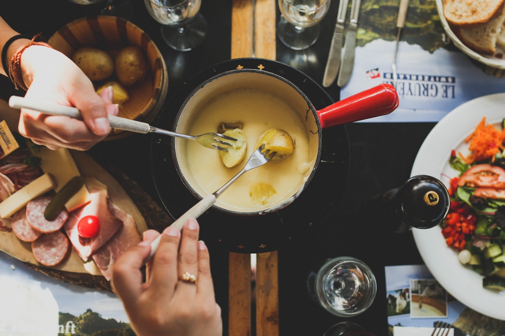
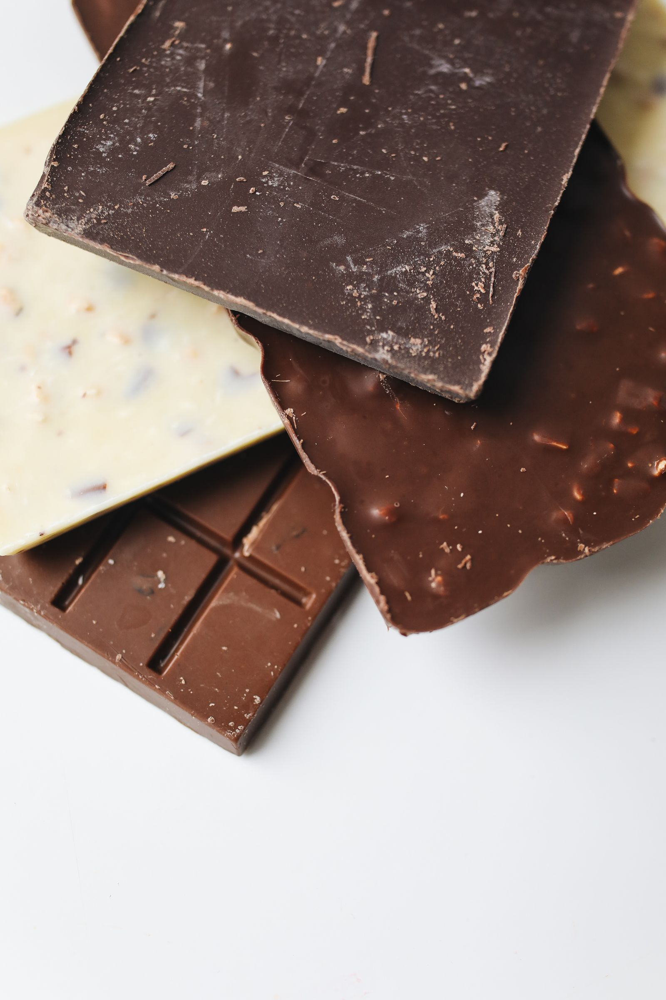
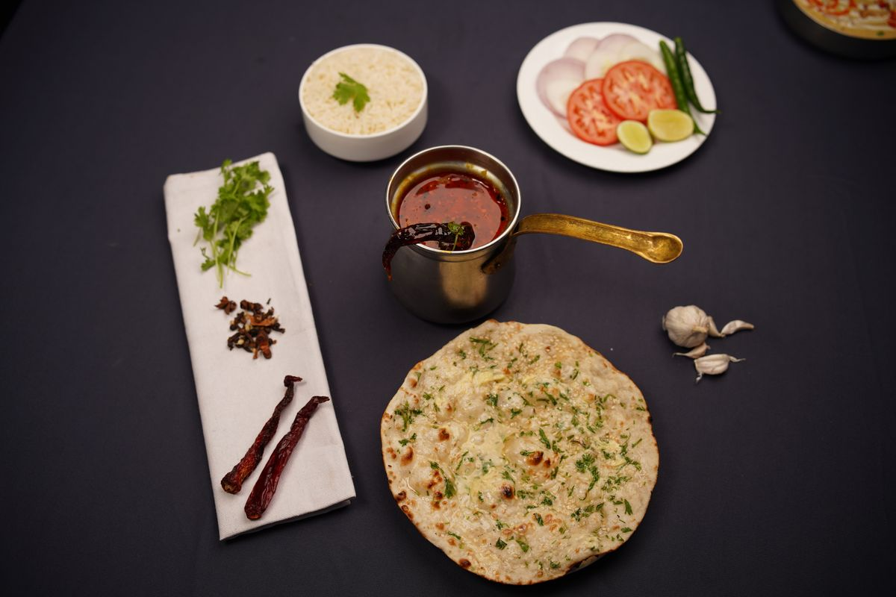

Indian Food in Switzerland
Chapter 10
Indian Food in Switzerland
Overview
Indian travelers need not worry about food in Switzerland. The country has a surprising number of Indian restaurants, grocery stores, and vegetarian-friendly options.

Traditional Swiss cheese fondue - a must-try experience | Image: Unsplash (angela pham)

Swiss chocolate is world-famous - a must-try for every visitor | Image: Pexels (Polina Tankilevitch)

Indian cuisine is widely available across Swiss cities | Image: Pexels (Jack Baghel)
Popular Indian Restaurants
| City | Restaurant | Cuisine | Price (CHF) |
|---|---|---|---|
| Zurich | Hiltl | Vegetarian Indian, oldest vegetarian restaurant in the world | 20-35 |
| Zurich | Swad Restaurant | North & South Indian, Thali, Dosas | 18-30 |
| Lucerne | Govinda's | Vegetarian, Jain option available | 14-22 |
| Interlaken | Tandoori House | North Indian, Tandoori | 16-28 |
| Interlaken | Taj Mahal Indian Restaurant | Authentic Indian, Halal options | 18-30 |
| Zermatt | Golden India | Indian & Nepali | 20-35 |
| Geneva | Sangeetha | South Indian, vegetarian | 15-25 |
| Montreux | Kashmir Indian Restaurant | North Indian, Kashmiri | 18-30 |
| Bern | Dhaba | Punjabi, Indian street food | 16-28 |
Vegetarian and Jain Options
Switzerland is very vegetarian-friendly. Almost all Indian restaurants have extensive vegetarian menus. Jain food is available at select restaurants like Govinda's in Lucerne and Hiltl in Zurich. ISKCON temples in Zurich and Geneva offer free vegetarian meals.
Average Meal Costs
| Meal Type | Price (CHF) | Price (₹) |
|---|---|---|
| Indian restaurant (thali/meal) | 18-30 | 1,710-2,850 |
| Fast food / street food | 8-15 | 760-1,425 |
| Supermarket ready meal | 5-10 | 475-950 |
| Swiss restaurant meal | 25-45 | 2,375-4,275 |